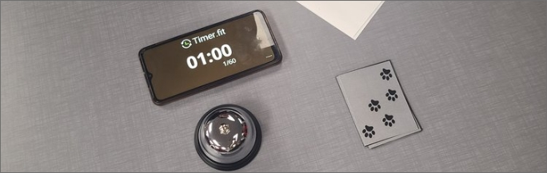

Critter Bidder
Summery
A chaotic bidding style game where players take on the roll of 8 different animals which are connect to a specific color. Each player will then try to collect 9 total cards with the same color as their animal. Players will have to trade with other players by saying how many cards they want to trade. The game has no rounds and anyone can go whenever they want. There is a phase system where every minute a new restriction is added onto the players.
Role on the Team
In the group, I had the role of Game Designer and Group Mediator. I contributed to the game by coming up with the theme of players taking the role of animals. I also helped come up with a lot of the mech anics of the game such as the phase system and the limitations it will apply. I also came up with the story and world prompt.